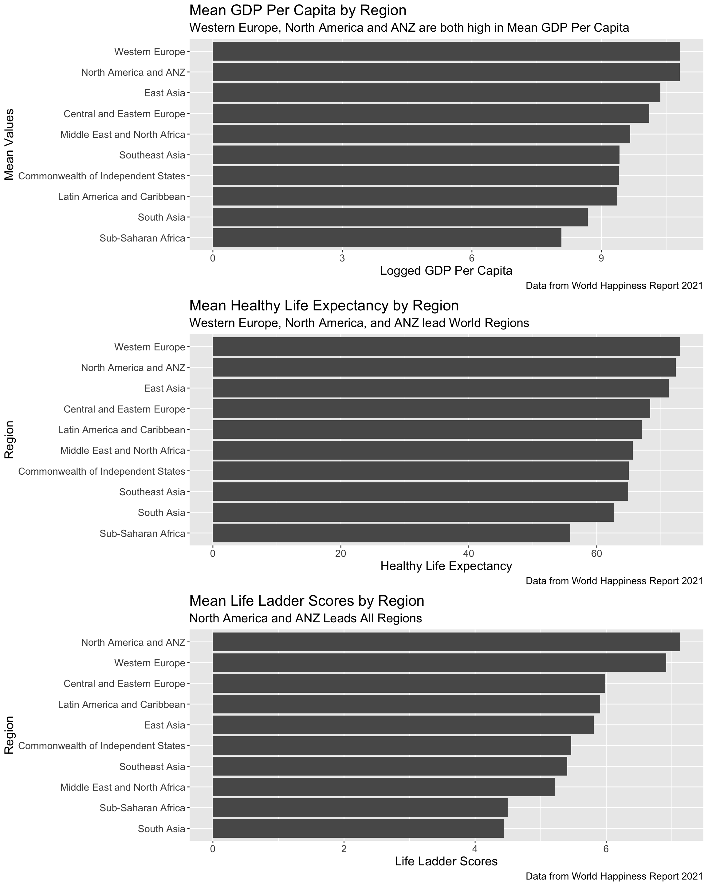

Check out the About page to learn more about the data and the project.
NOTE: The graphs are best viewed in landscape mode!

For the following graphs, move your cursor on a line in the interactive visualizations to see the year, life ladder score, and country name.
For the following graphs, move your cursor on a point in the interactive visualizations to GDP per capita, life ladder score year, region, and country name.
Double-click on a region in the legend to isolate specific points of that region on the graph. You can click on other regions to compare countries in different regions and their respective scores.
Double-click on the graph if you want to zoom out.
In the first graph, I wanted to create a scatter plot with the life ladder scores and GDP per capita on one graph. I plotted each country and filled each point by region.
The freedom and social support scores signify the extent to which each statistic impacted beneficial changes in life quality. I wanted to plot these scores for each country and fill each point by region.